Introducción 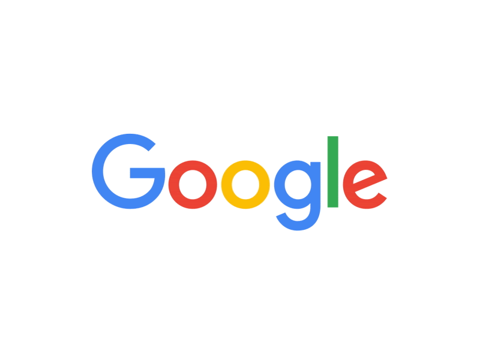
El presente tutorial es una guía para comenzar a utilizar Google Meet de manera autónoma con el objeto de poder impartir clases online o realizar tutorías.
Está diseñada con motivo de la crisis del COVID-19 para que, de manera autónoma, pueda aprenderse a iniciar videollamadas, clases grupales, tutorías individuales, de manera no presencial tanto el profesorado como el alumnado de la Universidad de Jaén, aunque el contenido es válido para cualquier otra institución educativa que disponga de GSuite.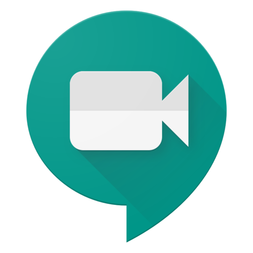
Al final del mismo hay una Guía Rápida para que sirva de resumen, y poder tenerla disponible en cualquier instante.
Contenidos
Podrás consultar:
- Cómo generar una clase y una tutoría online con vídeo (y compartir pantalla o materiales)
- Cómo utilizar el Calendario de Google (habilitado en GSuite) para programar las clases y las tutorías
- Cómo compartir los enlaces de las sesiones
- Cómo compartir el horario (calendario) de las videollamadas
- Cómo entrar en una clase o tutoría (para el alumnado)
- Cómo utilizar las posibilidades de Meet (formato, compartir, añadir o quitar miembros,...)
Nota final
Puesto que es un curso generado por la emergencia sanitaria que nos ocupa no va a ser estático, con lo que lo iremos mejorando con las dudas, sugerencias y aportaciones que recibamos. Cualquier colaboración es bienvenida.
Puedes iniciar reuniones, por ejemplo, desde un navegador, un teléfono móvil o un evento de Google Calendar que incluya un enlace a una videollamada.

Programar videollamadas en Calendar
Crear eventos que incluyan una videollamada
Al añadir un invitado a un evento, se añaden automáticamente un enlace a la videollamada y un número de acceso. También puedes hacer clic en Añadir conferencia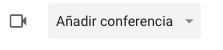
Nota: Los invitados pueden reenviar el enlace a la reunión a otros usuarios. Para que un usuario sin invitación pueda unirse a la reunión de Calendar, una persona de tu organización que participe en ella debe aceptar su solicitud.
- Ve a Google Calendar y crea un evento.
- En la pestaña Invitados, haz clic en Añadir invitados e introduce sus direcciones de correo electrónico.
- Haz clic en Guardar.
- Haz clic en Enviar para enviar las invitaciones.
Los invitados recibirán un correo electrónico con la información del evento y un enlace a la videollamada.
Copiar una videollamada de un evento a otro, para la misma asignatura
Para que la misma asignatura tenga siempre la misma entrada puedes programar eventos de Calendar, e incluir los mismos detalles de la conferencia de Meet.
- En Calendar, abre en modo de edición un evento que tenga una conferencia.
- Junto a Unirse a Google Meet, haz clic en la flecha hacia abajo .
- Junto a ID de la reunión, haz clic en Editar
 y pega o introduce una URL de Meet.
y pega o introduce una URL de Meet.
Nota: Solo puedes pegar enlaces de Meet (no de la versión clásica de Hangouts) de un evento de Calendar a otro. - Haz clic en Guardar.
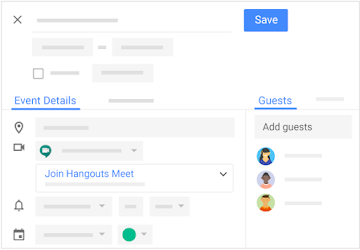
Iniciar tutorías inmediatas (o videollamadas) desde Meet
Si necesitas una consulta rápida, una tutoría personal, una reunión con un compañero, una sesión para un TFG o TFM, etc, puedes iniciar una reunión no programada en un navegador web. Si alguien te envía una URL de enlace a una reunión, solo tienes que hacer clic en el enlace para unirte a la llamada.
- En un navegador web, ve a https://meet.google.com.
- Haz clic en Iniciar una reunión Iniciar reunión.
- Para añadir a alguien a la reunión, elige una de estas opciones:
- Haz clic en Copiar
 y pega la información de la reunión en un correo electrónico o en otra aplicación, y envíasela a la persona que quieres invitar.
y pega la información de la reunión en un correo electrónico o en otra aplicación, y envíasela a la persona que quieres invitar. - Haz clic en Añadir personas y elige una opción:
- En la sección Invitar, introduce una dirección de correo electrónico y haz clic en Enviar invitación.
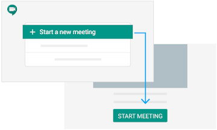
Iniciar videollamadas desde Gmail
- Abre Gmail.
- Ponte sobre cualquier contacto con el que quieras conectar
- En la ventana de sus datos pulsa sobre el vídeo que aparece abajo a la derecha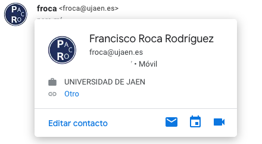
Con Meet, en cualquier momento puedes hacer videollamadas tanto desde ordenadores como desde dispositivos móviles..
Unirse desde eventos de Calendar
Consulta las clases o tutorías que tienes programadas en Calendar y únete a ellas rápidamente.
- En Calendar, haz clic en el evento al que quieres unirte.
- Haz clic en Unirse a Hangouts Meet y, en la ventana que se abre, haz clic en Unirse a la reunión.
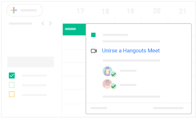.
Unirse desde Meet a clases o tutorías
En Meet, puedes seleccionar un evento programado o introducir un código de reunión.
Seleccionar un evento programado:
- En un navegador web, ve a https://meet.google.com/.
- Selecciona la reunión en la lista de eventos programados.
- Haz clic en Unirse a la reunión.
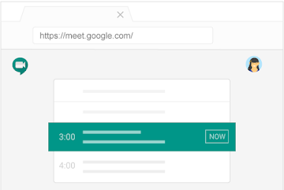
Nota: Los usuarios que se unan después del quinto participante se silenciarán automáticamente.
Introduce un código de reunión:
- En un navegador web, ve a https://meet.google.com.
- Haz clic en Usar un código de reunión.
- Introduce el código de la reunión y haz clic en Continuar.
- Haz clic en Unirse a la reunión.
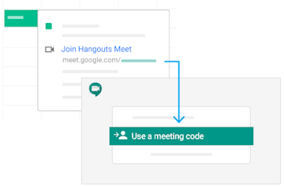
Unirse mediante la URL del enlace a la clase o sesión de tutoría
A veces no da tiempo a programar reuniones y reservar salas con antelación. Con Google Meet, basta con hacer clic en la URL de enlace a una reunión enviado por por correo electrónico o colgado en Ilias, la web, etc., para unirse a una videollamada improvisada.
- Haz clic en el enlace a la reunión que has recibido por correo electrónico o chat.
- Sigue las instrucciones que aparecen en la pantalla para unirte a la reunión.
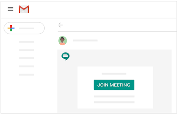
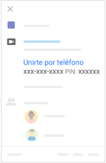
Con Google Meet, puedes añadir invitados a una sesión de clase o de tutoría antes o después de que comience la reunión. Los invitados pueden ser miembros de tu organización o personas ajenas a ella.
Los miembros de la Universidad de Jaén podrán unirse siempre si han iniciado sesión con su cuenta de G Suite de tipo xxx@red.ujaen.es o bien xxx@ujaen.es
A través de un evento de Calendar
Invitar a personas a una videollamada a través de Google Calendar
Durante una videollamada, puedes invitar a más personas o quitar a asistentes. Para invitar a personas ajenas a la universidad, que no se hayan añadido previamente a un evento de Calendar, primero es necesario que un miembro de la UJA les dé acceso a la reunión.
- Ve a Calendar y abre un evento.
- En la pestaña Invitados, ve a Añadir invitados y añade más participantes.
- Haz clic en Guardar.
- Haz clic en Enviar para enviar las invitaciones.
Los invitados recibirán un correo electrónico con la información del evento y un enlace a la videollamada.
Reenviar a más personas la información para unirse a una videollamada
Los invitados pueden reenviar a otras personas la invitación a una reunión o la información para unirse a ella. Un miembro de la Universidad de Jaén que participe en la reunión deberá aprobar a los invitados externos cuando intenten unirse a ella.
Los miembros de la UJA podrán unirse en cualquier momento si han iniciado sesión en su cuenta de G Suite de tipo xxx@red.ujaen.es o bien xxx@ujaen.es
Por correo electrónico
Durante una videollamada, puedes invitar a más personas o quitar a invitados. Para invitar a personas ajenas a la Universidad de Jaén que no se hayan añadido previamente a un evento de Calendar, primero es necesario que un miembro de tu organización les dé acceso a la reunión.
Elige una opción:
|
|
|
|
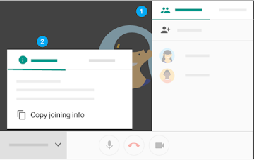
Quitar invitados de una videollamada
Nota: Para poder quitar a un invitado de una videollamada, debes pertenecer a la UJA.
- A la derecha, ve a Personas .
- Coloca el cursor sobre la persona que quieras y, a continuación, haz clic en la flecha hacia atrás .
- Haz clic en Quitar .
- Únete a una videollamada.
- En la esquina inferior derecha de la pantalla de Meet, haz clic en Más
 Cambiar diseño.
Cambiar diseño. - En el cuadro Cambiar diseño, selecciona el diseño que quieras utilizar en tu ordenador.
Opciones de diseño
- Automático: Meet elige automáticamente el diseño.
- Mosaico: si no hay ninguna presentación, se muestran hasta cuatro feeds de vídeo del mismo tamaño. Si la hay, esta ocupa toda la ventana y se muestran hasta tres participantes en uno de los laterales.
- Foco: la presentación, el participante activo o el feed fijado ocupan toda la ventana.
- Barra lateral: el participante activo o la presentación se muestran con otros participantes en uno de los laterales.
En la esquina inferior izquierda, selecciona el nombre de la reunión para que aparezcan su enlace, su número de acceso y cualquier otra información incluida en su evento, como la agenda, la descripción, los archivos adjuntos y los participantes.
- Únete a una videollamada de Meet.
- En la esquina inferior izquierda, haz clic en el nombre de la reunión.
Opciones:
- Haz clic en Copiar información
 para copiar los datos que necesitas para unirte a la reunión. A continuación, pega estos datos en un correo electrónico, un chat u otra aplicación y envíalos a los invitados.
para copiar los datos que necesitas para unirte a la reunión. A continuación, pega estos datos en un correo electrónico, un chat u otra aplicación y envíalos a los invitados. - Haz clic en Archivos adjuntos para seleccionar los archivos incluidos en el evento de calendario.
Durante una reunión, puedes enviar mensajes a los otros invitados a la clase o tutoría desde un ordenador o un dispositivo móvil.
- Únete a una videollamada de Meet.
- En la esquina superior derecha, haz clic en Chat .
- Introduce un mensaje de texto y haz clic en el icono Enviar
 .
.
Nota: Si quieres que los invitados puedan editar un archivo de Google, asegúrate de que lo has compartido con ellos.
Notas: Todos los usuarios que participen en la llamada podrán ver los mensajes.
- Solo podrás ver los mensajes de chat que se intercambien cuando estés en la reunión. Los mensajes enviados antes de que te unieras no se mostrarán. Además, todos los mensajes desaparecerán cuando abandones la reunión.
Por ejemplo: Comparte enlaces a elementos sobre los que quieras debatir, a presentaciones, recibe preguntas durante las presentaciones sin interrupciones
Durante una clase o tutoría, puedes mostrar la pantalla completa o solo una ventana determinada para compartir documentos, presentaciones, hojas de cálculo, etc.
Mostrar la pantalla durante una reunión
- Únete a una clase o tutoría.
- En la esquina inferior derecha, selecciona Presentar ahora.
- Selecciona Toda tu pantalla o Una ventana.
- Selecciona Compartir.
Si tienes la cámara activada, los participantes verán tu vídeo mientras estés mostrando la pantalla.
Dejar de mostrar la pantalla
- En la ventana de Meet, haz clic en Dejar de presentar.
- También puedes hacer clic en Estás presentando
 Dejar de presentar en la esquina inferior derecha.
Dejar de presentar en la esquina inferior derecha.
Mostrar la pantalla cuando otra persona ya está mostrando la suya
- En la esquina inferior derecha, haz clic en Presentar ahora.
- Selecciona Toda la pantalla o Una ventana.
- Selecciona Pasar a mostrar tu pantalla.
Información de interés:
- Las grabaciones incluyen la ventana principal y la tira de película de los participantes, incluidos el usuario activo y los documentos mostrados. No se incluyen otras ventanas ni las notificaciones. En las grabaciones no se tienen en cuenta los participantes fijados.
- Las grabaciones se guardan en la cuenta de Google Drive del organizador de la reunión y en el evento de Calendar. Además, el organizador de la reunión recibe el enlace de la grabación por correo electrónico.
- Los usuarios ajenos a la Universidad de Jaén, los que acceden desde aplicaciones móviles y los que llaman por teléfono reciben una notificación cuando la grabación empieza o cuando se detiene, pero no pueden controlarla.
- Si un participante activa la transcripción instantánea mientras se graba una videollamada, los subtítulos no se incluyen en la grabación, por lo que no los verás cuando la reproduzcas.
Iniciar y detener grabaciones
- Abre Meet e inicia o únete a una videollamada.
- Haz clic en Más Grabar la reunión.
- Espera a que empiece la grabación.
Cuando se inicia o se detiene la grabación, los demás participantes reciben una notificación. - Haz clic en Más Detener grabación cuando hayas terminado.
- También se detendrá la grabación de una reunión si todos sus participantes la abandonan.
- Vuelve a hacer clic en Detener grabación para confirmar la acción.
- Espera como mínimo 10 minutos a que se genere el archivo de grabación y se guarde en la carpeta de grabaciones de Meet del organizador de la reunión, en Mi unidad. El organizador de una reunión y el usuario que la haya grabado también recibirán un enlace a la grabación por correo electrónico.
Nota: Esta función solo está disponible en la versión para ordenadores. Los usuarios de aplicaciones móviles reciben notificaciones cuando empieza o se detiene una grabación, pero no pueden controlarla.
Reproducir, compartir, descargar o guardar grabaciones
En Google Drive
Las grabaciones se guardan en la carpeta de Google Drive del organizador del evento; concretamente, en la carpeta de grabaciones de Meet de Mi unidad. Sin embargo, si el organizador cambia o la reunión se celebra fuera del evento del calendario, el enlace a la reunión se enviará al creador original del evento.
- Abre Drive y haz doble clic en un archivo de grabación para reproducirlo.
- Selecciona una opción:
- Para compartir una grabación, selecciona el archivo y haz clic en el icono , o bien haz clic en el icono y pega el enlace en un mensaje de correo electrónico o de chat.
- Para descargar una grabación, selecciona el archivo y haz clic en Más Descargar .
- Para añadir una grabación a Mi unidad, selecciona el archivo y haz clic en el icono Añadir a mi unidad
A través de un correo electrónico
El organizador de una reunión y el usuario que la haya grabado recibirán un enlace a la grabación por correo electrónico.
- Haz clic en el enlace que se incluye en el correo electrónico.
- Espera a que se abra la grabación.
- Selecciona una opción:
- Para reproducir la grabación, haz clic en Reproducir .
- Para compartir la grabación, haz clic en Más Compartir . A continuación, introduce los nombres o las direcciones de correo electrónico de los usuarios con los que quieras compartirla y haz clic en Listo.
Nota: También puedes copiar y compartir enlaces. - Para descargar el archivo, haz clic en Descargar
- Para añadir la grabación a tu carpeta, haz clic en Añadir a Mi unidad
En eventos de Calendar
En los eventos de Calendar con reuniones grabadas, se incluye un enlace a la grabación si ha empezado y terminado dentro del horario programado. Los invitados a un evento de Calendar que pertenecen al mismo dominio que el organizador de la reunión tienen acceso automático a la grabación.
Con Google Meet y Google Calendar podemos hacer que un evento sea de solo visualización y se emita en directo para un máximo de 100.000 espectadores. Incluye todos los invitados en un mismo evento para compartir con ellos la información de la reunión y la URL de la emisión en directo. También puedes crear un evento con el modo de solo visualización por separado. Los usuarios que invites a este tipo de eventos no pueden participar en la reunión.
Puedes seguir añadiendo invitados con permiso para participar en la reunión y grabarla. También podrás detener e iniciar la emisión durante la reunión las veces que necesites.
Nota: Solo los invitados de la Universidad de Jaén pueden ver las emisiones en directo que hagas desde uja.es. Los invitados externos no podrán ver esas emisiones en directo.
Añadir emisiones en directo a eventos de Calendar
- Abre Google Calendar.
- Haz clic en Crear y añade los detalles del evento y los invitados.
- Haz clic en Añadir salas, ubicación o conferencias Añadir conferencia Hangouts Meet.
- Junto a Unirse a Google Meet, haz clic en la flecha hacia abajo Añadir emisión en directo.
- (Opcional) Para copiar la URL de la transmisión en directo con los invitados en un mensaje de correo electrónico o de chat, o copiarla en la descripción del evento, haz clic en Copiar . También puedes compartir la información necesaria para unirse a la reunión y el enlace a la transmisión en directo si invitas a los usuarios al evento de Calendar.
- Haz clic en Guardar.
Crear otro evento con acceso de solo visualización
- Abre Google Calendar y haz clic en el evento de emisión en directo.
- Haz clic en Más Crear un evento que solo se pueda visualizar.
- Añade invitados con el permiso "Solo ver" u otros detalles del evento.
- Haz clic en Guardar.
Quitar una emisión en directo de un evento
- Abre Google Calendar.
- Haz clic en el evento y, a continuación, en Editar
- Junto a Unirse a Google Meet, haz clic en la flecha hacia abajo Quitar emisión en directo.
- Haz clic en Guardar.
Nota: El enlace de la reunión cambia al añadir o quitar emisiones en directo. Puedes compartir los nuevos enlaces con los invitados.
Iniciar y detener emisiones en directo
Cualquier persona que participe en la reunión y que sea del mismo dominio que el organizador puede iniciar o detener la emisión en directo.
- Abre Google Calendar y únete a la videollamada.
- Selecciona Más Iniciar emisión.
- Confirma que quieres iniciar la emisión.
Cuando la emisión esté en curso, verás el indicador "DIRECTO" en la parte superior izquierda. Ahora, los invitados con el permiso "Solo ver" pueden ver la reunión con la URL de emisión. - Para detener la emisión, selecciona Más Detener emisión.
- Confirma que quieres detener la emisión.
Ver eventos de emisión en directo
Las personas que acceden a la emisión en directo mediante un enlace no pueden interactuar con los participantes de la reunión ni con el resto de los espectadores.
Para ver un evento de emisión en directo, los invitados pueden hacer lo siguiente:
- Hacer clic en el enlace de la emisión en directo que se incluye en el evento de Calendar o en el correo electrónico de invitación.
- Ver la emisión desde una sala de reuniones añadida al evento y configurada con Chromebox o Chromebase para reuniones.
Al ver un evento de transmisión en directo, puedes hacer lo siguiente:
- Detener e iniciar la reproducción en directo.
- Ajustar la velocidad de reproducción y la calidad del vídeo.
- Reproducir el vídeo en un televisor.
- Cambiar a modo de pantalla completa.
Iniciación con Calendar
1. Para crear una clase, haz clic en Crear Evento. Para actualizar un evento, haz clic en el evento > Editar .
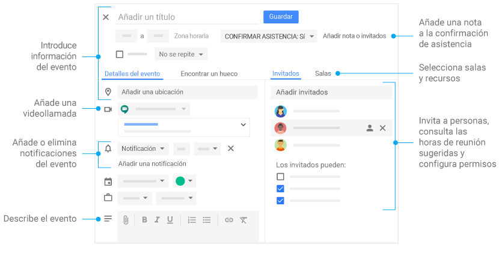
2. Haz clic en cualquier evento de tu calendario para responder a una invitación, unirte a una videollamada,
o modificar el evento.
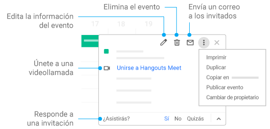
3. Añade y personaliza calendarios.
 Crear un calendario: permite crear más calendarios; por ejemplo, para equipos o proyectos concretos.
Crear un calendario: permite crear más calendarios; por ejemplo, para equipos o proyectos concretos.
 Añadir calendario: introduce la dirección de correo electrónico de un usuario y, junto a su nombre, haz clic en Más para elegir una opción.
Añadir calendario: introduce la dirección de correo electrónico de un usuario y, junto a su nombre, haz clic en Más para elegir una opción.
 Cambiar la configuración de un calendario: permite cambiar las notificaciones predeterminadas, compartir calendarios, definir el horario laboral y mucho más.
Cambiar la configuración de un calendario: permite cambiar las notificaciones predeterminadas, compartir calendarios, definir el horario laboral y mucho más.

Compartir el calendario de clases
Puedes compartir el calendario principal de tu cuenta u otro calendario tuyo.
- Abre Google Calendar en un ordenador. No es posible compartir calendarios desde la aplicación Google Calendar.
- Busca la sección "Mis calendarios" en el lateral izquierdo de la página. Tal vez tengas que hacer clic en ella para ver toda la lista.
- Coloca el cursor sobre el nombre del calendario que quieres compartir y haz clic en Más Configurar y compartir.
- Para compartirlo con muchas personas: en "Permisos de acceso", marca las casillas en función de cómo quieras compartirlo y elige las opciones en el menú desplegable.Para compartirlo solo con algunas personas: en la sección "Compartir con determinadas personas", haz clic en Añadir personas. Puedes compartirlo exclusivamente con los miembros de la Universidad de Jaén.
- Añade la dirección de correo electrónico de la persona o el grupo de Google. Utiliza el menú desplegable para ajustar la configuración de sus permisos.
- Haz clic en Enviar.
- El destinatario tendrá que hacer clic en el enlace del correo para añadir el calendario a su lista.
Añadir el calendario de clases a tu sitio web, docencia virtual,...
Puedes añadir a tu sitio web una versión interactiva de tu calendario, con botones para que tus visitantes puedan guardar los eventos de tu calendario.
Incrustar un calendario en tu sitio web
- Abre Google Calendar en un ordenador. Solamente se puede obtener el código para insertar un calendario en un sitio web desde un ordenador, no desde la aplicación Google Calendar.
- Arriba a la derecha, haz clic en la rueda dentada Configuración.
- En el lado izquierdo de la pantalla, haz clic en el nombre del calendario que quieres insertar.
- Copia el código de iFrame que aparece en el apartado "Integrar el calendario".
- Debajo del código de inserción, haz clic en Personalizar.
- Elige tus opciones y copia el código HTML que aparece.
Solamente podrán ver tu calendario incrustado las personas con las que lo hayas compartido. Si quieres que todos tus visitantes vean tu calendario, tienes que hacerlo público.
Permitir que los estudiantes al visitar tu web guarden un evento de tu calendario
Puedes añadir a tu sitio web un botón de Google Calendar para que los visitantes guarden tu evento rápidamente en sus propios calendarios de Google Calendar. Para permitir que cualquier persona guarde tu evento, debes hacer público tu calendario.
- Abre Google Calendar en un ordenador. Solamente puedes modificar la visibilidad de tu calendario en el ordenador, no en la aplicación para móviles.
- En un calendario público, crea o edita un evento.
- Haz clic en Más acciones Publicar evento.
- En la ventana "Publicar evento", copia el código HTML que aparecerá.
- Abre el editor de tu sitio web y pega el código donde quieras que aparezca el botón del evento.
Hacer público tu calendario
- Abre Google Calendar en un ordenador.
- Arriba a la derecha, haz clic en Configuración Configuración.
- Haz clic en el nombre del calendario que quieras compartir.
- Abre Permisos de acceso.
- Marca la casilla que verás junto a "Compartir públicamente".
- Si no quieres que los demás vean los detalles de tus eventos, selecciona Ver solo libre/ocupado (ocultar detalles).
Para tener una vista de los participantes en modo Grid debemos añadir la extensión de Chrome Google Meet Grid View
- Abre Chrome Web Store.
o bien pulsa en los tres puntitos del navegador de arriba a la derecha 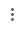, clica en "Más herramientas" -> "Extensiones". Abre el menú de arriba a la izquierda , y en esa columna abajo del todo pulsa en 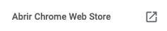
- Busca Google Meet Grid View
- Haz clic en Añadir a Chrome
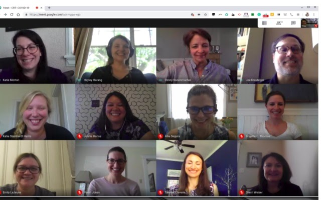
Recoger la asistencia de una sesión de Google Meet en una Google Sheet con la extensión Asistencia Meet
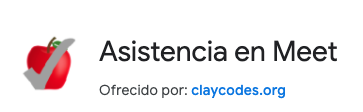
- Abre Chrome Web Store.
o bien pulsa en los tres puntitos del navegador de arriba a la derecha , clica en "Más herramientas" -> "Extensiones". Abre el menú de arriba a la izquierda , y en esa columna abajo del todo pulsa en
- Busca Asistencia Meet
- Haz clic en Añadir a Chrome
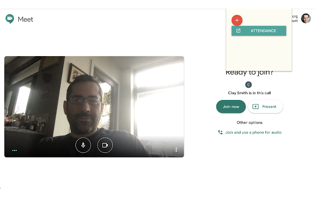
Con la extensión
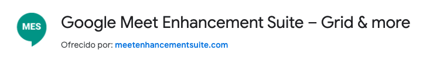
es posible:
– Diseño de cuadrícula en vídeo conferencia
– Pulsar la barra espaciadora para activar el silencio de manera directa
– Cuando alguien accede a la videoconferencia, lo hará directamente a la pantalla de la reunión, sin ningún tipo de proceso previo.
– El micrófono se pone en silencio de forma automática.
– Cuenta con Subtítulos automáticos
– El vídeo se apaga automáticamente al detectar inactividad.
Ya se está habilitando la función, siguiendo los siguientes pasos:
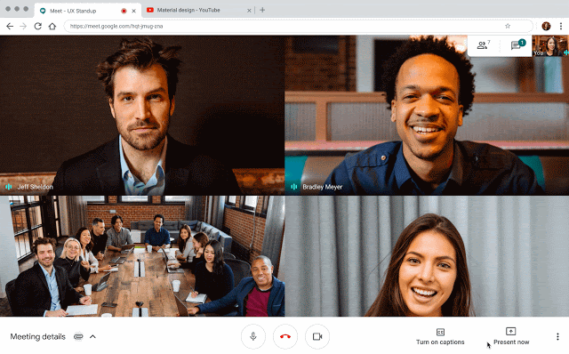
Actualizado 22 de abril, es posible que en tu dominio no se haya activado todavía.
Inicia una clase o tutoría (videollamada).
Abre el navegador Chrome e introduce https://meet.google.com.
Abre la aplicación Meet de tu dispositivo móvil Android (Play Store) o Apple® iOS® (App Store).
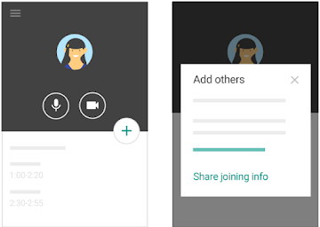
Unirse a una clase o tutoría (a una videollamada).
Haz clic en el enlace a la reunión de Meet que te hayan enviado por mensaje, por correo electrónico, colgado en la plataforma de docencia virtual, web,....
O bien desde Meet, únete a una reunión programada o utiliza un código de reunión.
Si está programada, en Calendar, haz clic en el evento al que quieres unirte.
Programa clases y tutorías (videollamadas) desde Calendar.
Ve a Google Calendar y crea un evento.
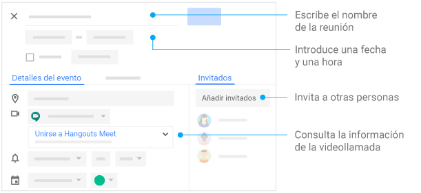
Haz click en "Más opciones" y en .
La mayoría del contenido procede del propio soporte de Google para la herramienta:
https://support.google.com/meet#topic=7306097
Contenido del Curso de capacitación para profesores (para obtener Certificado Google)
Otros recursos:
https://teachfromhome.google/intl/es/
https://sites.google.com/las2conb.com/meetfaq/otros-recursos?authuser=0
Cómo cerrar una sesión para que los alumnos no permanezcan
Se debe eliminar antes a los alumnos de la sesión. Para ello nos vamos a ,
pulsamos en para que se despliegue una lista de usuarios, nos ponemos sobre cada uno de ellos y lo "quitamos" dándole a 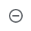. Una vez que no quedan participantes podemos colgar la sesión y ellos no podrán acceder sin nuestra autorización.
Si nos interesa podemos colgar y que ellos queden conectados entre sí trabajando sobre la clase.
27/03/2020
En respuesta a las sugerencias que nos han enviado profesores de todo el mundo, hemos empezado a implementar nuevas funciones en Google Meet. Tenemos previsto que estas funciones se implementan en todos los dominios registrados en G Suite para Centros Educativos y G Suite Enterprise para Centros Educativos en las próximas dos o tres semanas.
Mejoras en las funciones para silenciar y quitar participantes
En las cuentas de centros educativos, solo el creador de la reunión, el propietario del calendario asociado a ella o la persona que haya configurado la reunión en un dispositivo de hardware de una sala podrán silenciar o quitar participantes. Esto significa que si un profesor ha creado la reunión o es el propietario del calendario en el que se creó, los alumnos no podrán quitar ni silenciar a otros compañeros.
Mejoras de los controles con los que los profesores gestionan las reuniones con apodos
Los participantes no podrán volver a unirse a una reunión una vez que el último participante haya salido de ella en estos casos:
- Si la reunión se creó mediante un enlace corto, como g.co/meet/nickname.
- Si se creó en meet.google.com introduciendo un apodo de reunión en el campo "Iniciar o unirse a una reunión".
- Si se creó en la aplicación Meet introduciendo un apodo en el campo "Código de reunión".
Esto significa que si el profesor es la última persona en salir de este tipo de reuniones, los alumnos no podrán volver a unirse a ellas cuando el profesor ya no esté.
10/04/2020
- Sólo creadores y propietarios de calendarios pueden silenciar o quitar otros participantes. Esto asegura que los instructores no pueden ser removidos o silenciado por los estudiantes participantes.
- Solamente los creadores y propietarios de calendarios de reuniones pueden aprobar solicitudes para unirse hechas por los participantes externos. Esto significa que los estudiantes no pueden admitir a los participantes externos y que los participantes externos no pueden unirse antes de que el instructor.
- Participantes de la reunión no pueden volver a unirse a reuniones una vez que el último participante la haya dejado, a menos que cuente con los privilegios de creación para iniciar una nueva reunión. Esto significa que si el instructor es la última persona en salir de una reunión "apodada", los estudiantes no pueden unirse de nuevo hasta que un instructor vuelva a entrar.
Con motivo de la extensión del COVIR-19 y para tratar de evitar el crecimiento exponencial del contagio, agradeciendo a Google for Education que haya liberado la versión GSuite Enterprise, y entendiendo que es una manera de apoyar a la educación, para que la pandemia no la merme, ponemos a disposición de la comunidad educativa en particular, y de la sociedad en general, un manual de uso de Google Meet así como una línea de contacto para tratar de ayudar a resolver dudas e incidencias. #QuédateEnCasa
El presente taller está pensado para tratar de ser utilizado de forma autodidacta. Lo iremos revisando y actualizando conforme nos lleguen cuestiones o dudas, así como situaciones concretas, y lo iremos añadiendo al punto "Cuestiones añadidas por la interacción de los usuarios del curso".